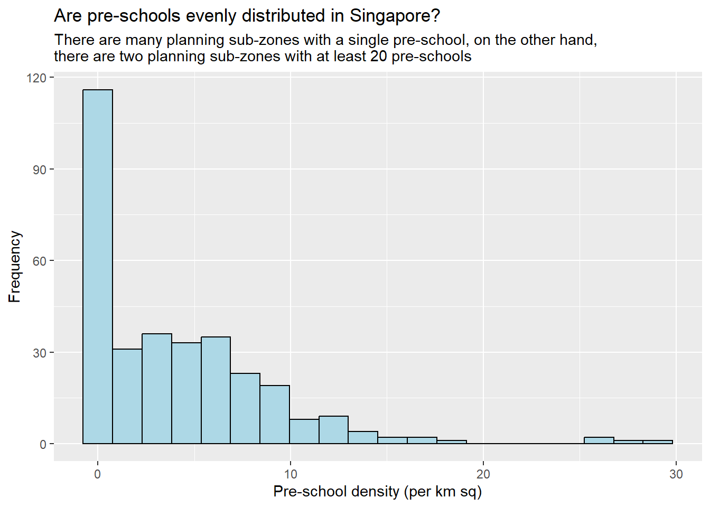
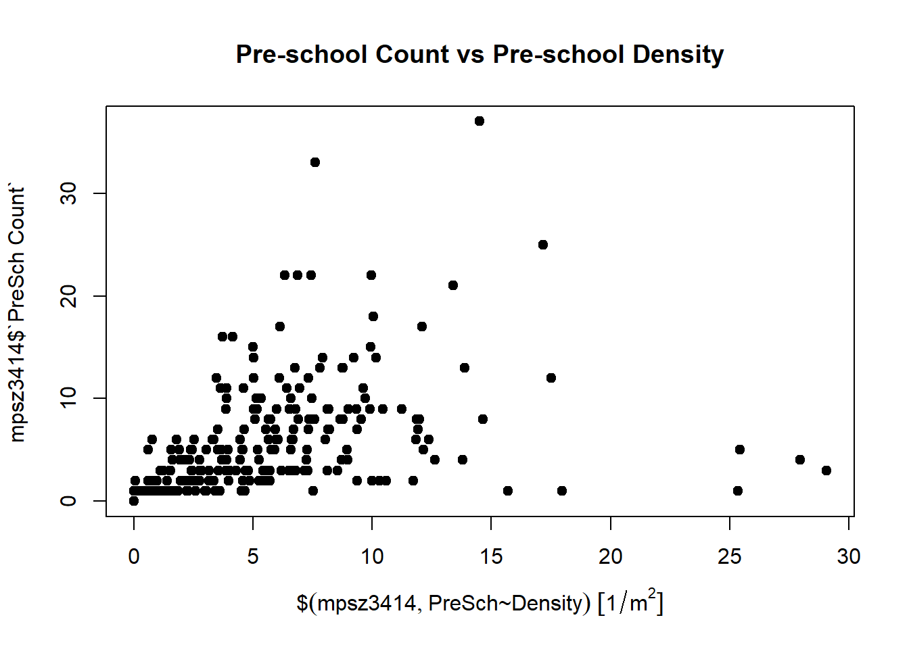
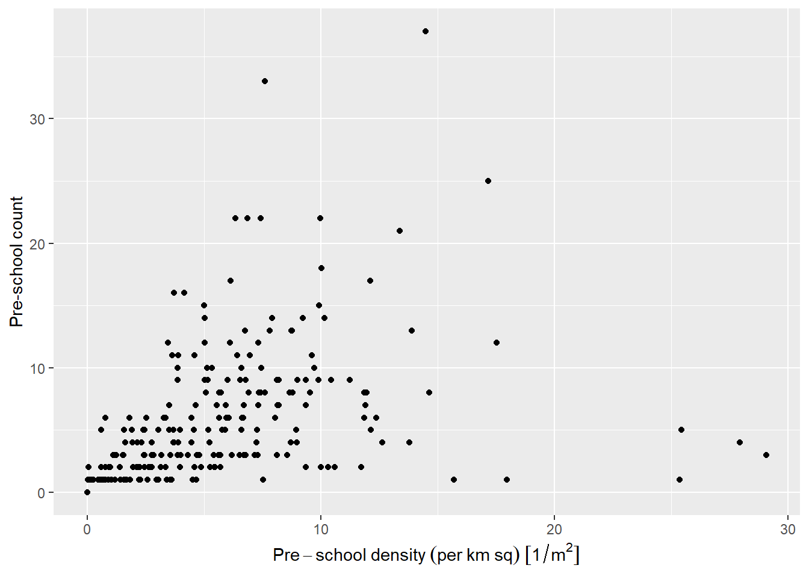
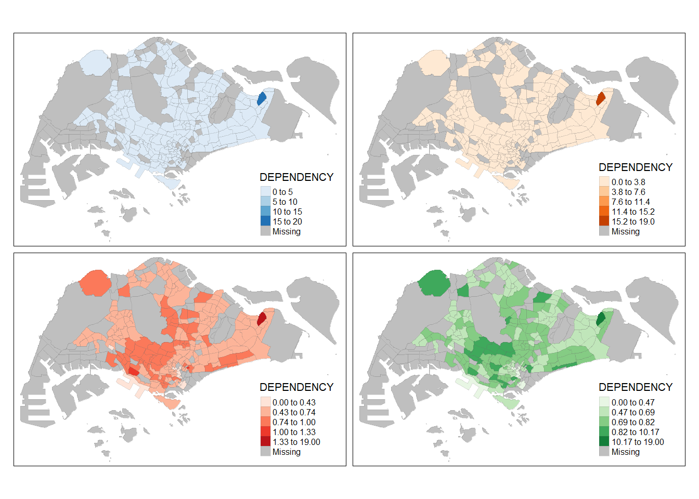
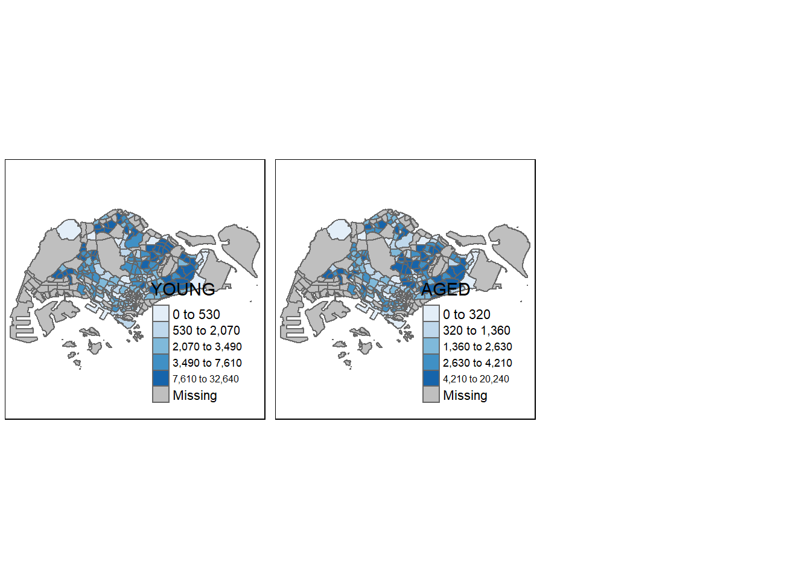
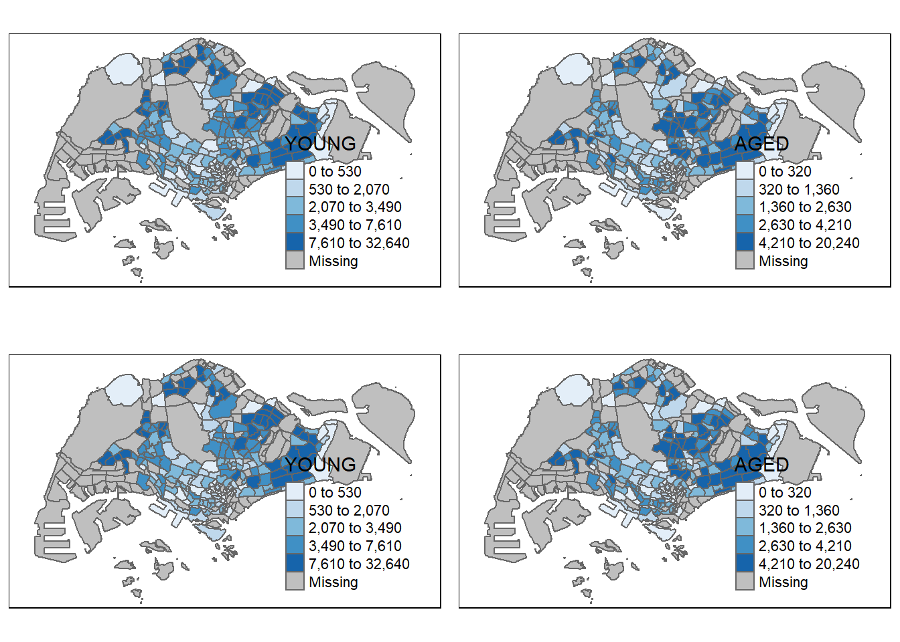

pacman::p_load(sf, tidyverse)Hands-on Exercise 1: Geospatial Data Wranglingand Choropleth Mapping with R
1.1 Overview of Part I
In the first of this two-part hands-on exercise, I learned how to import, and wrangle geospatial data using appropriate R packages.
1.2 Data Acquisition
1.3 Getting Started
The code chunk below installs and loads sf and tidyverse packages into R environment. pacman() is a R package management tool. It provides intuitively named functions for the base functions.
An alternate way to install and import the libraries is as follows:
packages = c('sf','tidyverse')
for (p in packages){
if(!require(p, character.only = T)){
install.packages(p)
}
library(p, character.only = T)
}1.4 Import Geospatial Data
In this section, I learned how to import the following geospatial data into R by using st_read() of sf package:
MP14_SUBZONE_WEB_PL, a polygon feature layer in ESRI shapefile format,CyclingPath, a line feature layer in ESRI shapefile format, andPreSchool, a point feature layer in kml file format.
1.4.1 Import polygon feature date in shapefile format
The code chunk below uses st_read() function of sf package to import MP14_SUBZONE_WEB_PL shapefile into R as a polygon feature data frame.
When the input geospatial data is in shapefile format (.shp), two arguments will be used: dsn to define the data path and layer to provide the shapefile name. No extensions such as .shp, .dbf, .prj and .shx are reqquired.
mpsz = st_read(dsn="data\\geospatial",
layer = "MP14_SUBZONE_WEB_PL")Reading layer `MP14_SUBZONE_WEB_PL' from data source
`C:\ameliachuayt\ISSS624\Hands-on_Ex\Hands-on_Ex1\data\geospatial'
using driver `ESRI Shapefile'
Simple feature collection with 323 features and 15 fields
Geometry type: MULTIPOLYGON
Dimension: XY
Bounding box: xmin: 2667.538 ymin: 15748.72 xmax: 56396.44 ymax: 50256.33
Projected CRS: SVY21The output shows that there are 323 multipolygon features and 15 fields. The Bounding box provides the x extend and y extend of the data.
1.4.2 Import polyline feature data in shapefile form
The code chunk below uses st_read() function of sf package to import CyclingPath shapefile into R as a line feature data frame.
cyclingpath = st_read(dsn = "data\\geospatial",
layer = 'CyclingPath')Reading layer `CyclingPath' from data source
`C:\ameliachuayt\ISSS624\Hands-on_Ex\Hands-on_Ex1\data\geospatial'
using driver `ESRI Shapefile'
Simple feature collection with 1625 features and 2 fields
Geometry type: LINESTRING
Dimension: XY
Bounding box: xmin: 12711.19 ymin: 28711.33 xmax: 42626.09 ymax: 48948.15
Projected CRS: SVY21The output shows that there are 1625 features and 2 fields in CyclingPath linestring feature data frame and it is in svy21 projected coordinates system.
1.4.3 Import GIS data in kml format
The code chunk below uses st_read() function of sf package to import pre-schools-location-kml kml file into R as a point feature layer. Since we are dealing with a kml file, instead of specifying dsn and layer, we specify the complete path and file extension.
preschool = st_read("data\\geospatial\\pre-schools-location-kml.kml")Reading layer `PRESCHOOLS_LOCATION' from data source
`C:\ameliachuayt\ISSS624\Hands-on_Ex\Hands-on_Ex1\data\geospatial\pre-schools-location-kml.kml'
using driver `KML'
Simple feature collection with 1359 features and 2 fields
Geometry type: POINT
Dimension: XYZ
Bounding box: xmin: 103.6824 ymin: 1.248403 xmax: 103.9897 ymax: 1.462134
z_range: zmin: 0 zmax: 0
Geodetic CRS: WGS 84The output reveals that preschool is a point feature data frame (see “Geometry type: POINT’”). There are a total of 1359 features and 2 fields. Different from the previous two simple feature data frame, preschool is in wgs84 coordinates system (see “Geodetic CRS: WGS 84”).
1.5 Checking the Content of A Simple Feature Data Frame
In the section, I learned different ways to retrieve information related to the contents of a simple feature data frame.
1.5.1 Working with st_geometry()
The column in the sf data.frame that contains the geometries is a list, of class sfc. We can retrieve the geometry list-column in this case by mpsz$geom or mpsz[[1]], but the more general way uses st_geometry() as shown in the code chunk below.
st_geometry(mpsz)Geometry set for 323 features
Geometry type: MULTIPOLYGON
Dimension: XY
Bounding box: xmin: 2667.538 ymin: 15748.72 xmax: 56396.44 ymax: 50256.33
Projected CRS: SVY21
First 5 geometries:MULTIPOLYGON (((31495.56 30140.01, 31980.96 296...MULTIPOLYGON (((29092.28 30021.89, 29119.64 300...MULTIPOLYGON (((29932.33 29879.12, 29947.32 298...MULTIPOLYGON (((27131.28 30059.73, 27088.33 297...MULTIPOLYGON (((26451.03 30396.46, 26440.47 303...The output displays basic information of the feature class such as type of geometry, the geographic extent of the features and the coordinate system of the data.
1.5.2 Working with glimpse().
To learn more about the associated attribute information in the data frame, we can use glimpse() of dplyr.
glimpse(mpsz)Rows: 323
Columns: 16
$ OBJECTID <int> 1, 2, 3, 4, 5, 6, 7, 8, 9, 10, 11, 12, 13, 14, 15, 16, 17, …
$ SUBZONE_NO <int> 1, 1, 3, 8, 3, 7, 9, 2, 13, 7, 12, 6, 1, 5, 1, 1, 3, 2, 2, …
$ SUBZONE_N <chr> "MARINA SOUTH", "PEARL'S HILL", "BOAT QUAY", "HENDERSON HIL…
$ SUBZONE_C <chr> "MSSZ01", "OTSZ01", "SRSZ03", "BMSZ08", "BMSZ03", "BMSZ07",…
$ CA_IND <chr> "Y", "Y", "Y", "N", "N", "N", "N", "Y", "N", "N", "N", "N",…
$ PLN_AREA_N <chr> "MARINA SOUTH", "OUTRAM", "SINGAPORE RIVER", "BUKIT MERAH",…
$ PLN_AREA_C <chr> "MS", "OT", "SR", "BM", "BM", "BM", "BM", "SR", "QT", "QT",…
$ REGION_N <chr> "CENTRAL REGION", "CENTRAL REGION", "CENTRAL REGION", "CENT…
$ REGION_C <chr> "CR", "CR", "CR", "CR", "CR", "CR", "CR", "CR", "CR", "CR",…
$ INC_CRC <chr> "5ED7EB253F99252E", "8C7149B9EB32EEFC", "C35FEFF02B13E0E5",…
$ FMEL_UPD_D <date> 2014-12-05, 2014-12-05, 2014-12-05, 2014-12-05, 2014-12-05…
$ X_ADDR <dbl> 31595.84, 28679.06, 29654.96, 26782.83, 26201.96, 25358.82,…
$ Y_ADDR <dbl> 29220.19, 29782.05, 29974.66, 29933.77, 30005.70, 29991.38,…
$ SHAPE_Leng <dbl> 5267.381, 3506.107, 1740.926, 3313.625, 2825.594, 4428.913,…
$ SHAPE_Area <dbl> 1630379.27, 559816.25, 160807.50, 595428.89, 387429.44, 103…
$ geometry <MULTIPOLYGON [m]> MULTIPOLYGON (((31495.56 30..., MULTIPOLYGON (…As we can see in the output, glimpse() reveals the data type of each field.
For example, FMEL-UPD_D is in date data ‘<date>’, and X_ADDR, Y_ADDR are in double precision values ‘<dbl>’
1.5.3 Working with head()
Sometimes, we would like to examine complete information of a feature object. We can use head() of Base R to achieve this. The argument n allows us to indicate the number of records to display.
head(mpsz, n=5)Simple feature collection with 5 features and 15 fields
Geometry type: MULTIPOLYGON
Dimension: XY
Bounding box: xmin: 25867.68 ymin: 28369.47 xmax: 32362.39 ymax: 30435.54
Projected CRS: SVY21
OBJECTID SUBZONE_NO SUBZONE_N SUBZONE_C CA_IND PLN_AREA_N
1 1 1 MARINA SOUTH MSSZ01 Y MARINA SOUTH
2 2 1 PEARL'S HILL OTSZ01 Y OUTRAM
3 3 3 BOAT QUAY SRSZ03 Y SINGAPORE RIVER
4 4 8 HENDERSON HILL BMSZ08 N BUKIT MERAH
5 5 3 REDHILL BMSZ03 N BUKIT MERAH
PLN_AREA_C REGION_N REGION_C INC_CRC FMEL_UPD_D X_ADDR
1 MS CENTRAL REGION CR 5ED7EB253F99252E 2014-12-05 31595.84
2 OT CENTRAL REGION CR 8C7149B9EB32EEFC 2014-12-05 28679.06
3 SR CENTRAL REGION CR C35FEFF02B13E0E5 2014-12-05 29654.96
4 BM CENTRAL REGION CR 3775D82C5DDBEFBD 2014-12-05 26782.83
5 BM CENTRAL REGION CR 85D9ABEF0A40678F 2014-12-05 26201.96
Y_ADDR SHAPE_Leng SHAPE_Area geometry
1 29220.19 5267.381 1630379.3 MULTIPOLYGON (((31495.56 30...
2 29782.05 3506.107 559816.2 MULTIPOLYGON (((29092.28 30...
3 29974.66 1740.926 160807.5 MULTIPOLYGON (((29932.33 29...
4 29933.77 3313.625 595428.9 MULTIPOLYGON (((27131.28 30...
5 30005.70 2825.594 387429.4 MULTIPOLYGON (((26451.03 30...1.6 Plotting the Geospatial Data
In geospatial analytics, we are definitely interested to visualise geospatial features. plot() provides a quick and simply way to visualise the data at hand.
plot(mpsz)Warning: plotting the first 9 out of 15 attributes; use max.plot = 15 to plot
all
The default plot of sf object is a multi-plot of all attributes, up to a maximum limit (in this case, it is 9 out of 15) as shown above.
We can also choose to plot only the geometry by using the code chunk below.
plot(st_geometry(mpsz))
We can also choose to plot the sf object by using a specific attribute.
plot(mpsz["PLN_AREA_N"])
As mentioned earlier, plot() is meant for plotting the geospatial object for quick look. For high cartographic quality plot with more customisation options, tmap or other packages should be used.
1.7 Working with Projection
In order to perform geoprocessing using two geospatial data, we need to ensure that both geospatial data are projected using similar coordinate system. Projection Transformation is the process of projecting a simple feature data frame from one coordinate system to another coordinate system.
1.7.1 Assigning EPSG code to a simple feature data frame
EPSG stands for European Petroleum Survey Group and is an organisation that maintains a public registry of geodetic parameter database with standard codes–the EPSG codes.
One common issue faced during importing geospatial data into R is that the coordinate system of the source data was either missing (such as due to missing .proj for ESRI shapefile) or wrongly assigned during the importing process.
We can examine the coordinate system of mpsz simple feature data frame by using st_crs() of sf package as shown in the code chunk below.
st_crs(mpsz)Coordinate Reference System:
User input: SVY21
wkt:
PROJCRS["SVY21",
BASEGEOGCRS["SVY21[WGS84]",
DATUM["World Geodetic System 1984",
ELLIPSOID["WGS 84",6378137,298.257223563,
LENGTHUNIT["metre",1]],
ID["EPSG",6326]],
PRIMEM["Greenwich",0,
ANGLEUNIT["Degree",0.0174532925199433]]],
CONVERSION["unnamed",
METHOD["Transverse Mercator",
ID["EPSG",9807]],
PARAMETER["Latitude of natural origin",1.36666666666667,
ANGLEUNIT["Degree",0.0174532925199433],
ID["EPSG",8801]],
PARAMETER["Longitude of natural origin",103.833333333333,
ANGLEUNIT["Degree",0.0174532925199433],
ID["EPSG",8802]],
PARAMETER["Scale factor at natural origin",1,
SCALEUNIT["unity",1],
ID["EPSG",8805]],
PARAMETER["False easting",28001.642,
LENGTHUNIT["metre",1],
ID["EPSG",8806]],
PARAMETER["False northing",38744.572,
LENGTHUNIT["metre",1],
ID["EPSG",8807]]],
CS[Cartesian,2],
AXIS["(E)",east,
ORDER[1],
LENGTHUNIT["metre",1,
ID["EPSG",9001]]],
AXIS["(N)",north,
ORDER[2],
LENGTHUNIT["metre",1,
ID["EPSG",9001]]]]Although the mpsz data frame is projected in ‘svy21’, when we read till the end of the print it indicates that EPSG is 9001, which is wrong. See the last line where “ID[”EPSG”,9001]“.
The correct/corresponding EPSG code for ‘svy21’ should be ‘3414’. We can assign the correct EPSG code using st_set_crs() of sf package.
mpsz3414 <- st_set_crs(mpsz, 3414)Warning: st_crs<- : replacing crs does not reproject data; use st_transform for
thatTo confirm the change, we can check the coordinate system or CSR again.
st_crs(mpsz3414)Coordinate Reference System:
User input: EPSG:3414
wkt:
PROJCRS["SVY21 / Singapore TM",
BASEGEOGCRS["SVY21",
DATUM["SVY21",
ELLIPSOID["WGS 84",6378137,298.257223563,
LENGTHUNIT["metre",1]]],
PRIMEM["Greenwich",0,
ANGLEUNIT["degree",0.0174532925199433]],
ID["EPSG",4757]],
CONVERSION["Singapore Transverse Mercator",
METHOD["Transverse Mercator",
ID["EPSG",9807]],
PARAMETER["Latitude of natural origin",1.36666666666667,
ANGLEUNIT["degree",0.0174532925199433],
ID["EPSG",8801]],
PARAMETER["Longitude of natural origin",103.833333333333,
ANGLEUNIT["degree",0.0174532925199433],
ID["EPSG",8802]],
PARAMETER["Scale factor at natural origin",1,
SCALEUNIT["unity",1],
ID["EPSG",8805]],
PARAMETER["False easting",28001.642,
LENGTHUNIT["metre",1],
ID["EPSG",8806]],
PARAMETER["False northing",38744.572,
LENGTHUNIT["metre",1],
ID["EPSG",8807]]],
CS[Cartesian,2],
AXIS["northing (N)",north,
ORDER[1],
LENGTHUNIT["metre",1]],
AXIS["easting (E)",east,
ORDER[2],
LENGTHUNIT["metre",1]],
USAGE[
SCOPE["Cadastre, engineering survey, topographic mapping."],
AREA["Singapore - onshore and offshore."],
BBOX[1.13,103.59,1.47,104.07]],
ID["EPSG",3414]]Note that the EPSG code is 3414. See last line where “ID[”EPSG”,3414]“.
1.7.2 Transforming the projection of preschool from wgs84 to svy21
In this sub-section, we will learn how to transform original data from geographic coordinate system to projected coordinate system. We need to do this transformation because the geographic coordinate system is inappropriate if the analysis require the use of distance and/or area measurements.
For the preschool simple feature data frame, the output of the code chunk below tells us that it is in the wgs84 coordinate system (see “Geodetic CRS: WGS 85”).
st_geometry(preschool)Geometry set for 1359 features
Geometry type: POINT
Dimension: XYZ
Bounding box: xmin: 103.6824 ymin: 1.248403 xmax: 103.9897 ymax: 1.462134
z_range: zmin: 0 zmax: 0
Geodetic CRS: WGS 84
First 5 geometries:POINT Z (103.7614 1.308683 0)POINT Z (103.7536 1.315748 0)POINT Z (103.7645 1.305078 0)POINT Z (103.765 1.305239 0)POINT Z (103.7597 1.315983 0)Instead of using st_set_crs() like we did in the previous section, we must use st_transform() of the sf package. This is because we need to reproject preschool from one coordinate system to another coordinate system mathematically.
preschool3414 <- st_transform(preschool,
crs = 3414)Note: In practice, we need to find out the appropriate project coordinate system to use before performing the projection transformation.
Let’s check if the transformation is complete.
st_geometry(preschool3414)Geometry set for 1359 features
Geometry type: POINT
Dimension: XYZ
Bounding box: xmin: 11203.01 ymin: 25667.6 xmax: 45404.24 ymax: 49300.88
z_range: zmin: 0 zmax: 0
Projected CRS: SVY21 / Singapore TM
First 5 geometries:POINT Z (19997.26 32333.17 0)POINT Z (19126.75 33114.35 0)POINT Z (20345.12 31934.56 0)POINT Z (20400.31 31952.36 0)POINT Z (19810.78 33140.31 0)From the output, we can see that it is in the svy21 projected coordinate system now (see “Projected CRS: SVY21 / Singapore TM). Also, the Bounding box values are greater than 0-360 range of decimal degree commonly used by most of the geographic coordinate systems.
1.8 Importing and Converting Aspatial Data
It is common to have data such as listing of inside Airbnb. Such data are called aspatial data. They are not geospatial data, however, among the data fields, there are two fields that capture the x- and y- coordinates of the data points.
In this section, I learned to import aspatial data in R environment and save it as a tibbledata frame. Then, I will convert it into a simple feature data frame.
1.8.1 Importing aspatial data
listings.csv data set is in csv format and we will use read_csv() or readr package to import the file. The output R object is called listings and is a tibble data frame.
listings <- read_csv('data\\aspatial\\listings.csv')Rows: 4252 Columns: 16
── Column specification ────────────────────────────────────────────────────────
Delimiter: ","
chr (5): name, host_name, neighbourhood_group, neighbourhood, room_type
dbl (10): id, host_id, latitude, longitude, price, minimum_nights, number_o...
date (1): last_review
ℹ Use `spec()` to retrieve the full column specification for this data.
ℹ Specify the column types or set `show_col_types = FALSE` to quiet this message.Let’s examine if the import was completely correctly.
list(listings)[[1]]
# A tibble: 4,252 × 16
id name host_id host_…¹ neigh…² neigh…³ latit…⁴ longi…⁵ room_…⁶ price
<dbl> <chr> <dbl> <chr> <chr> <chr> <dbl> <dbl> <chr> <dbl>
1 50646 Pleasan… 227796 Sujatha Centra… Bukit … 1.33 104. Privat… 80
2 71609 Ensuite… 367042 Belinda East R… Tampin… 1.35 104. Privat… 178
3 71896 B&B Ro… 367042 Belinda East R… Tampin… 1.35 104. Privat… 81
4 71903 Room 2-… 367042 Belinda East R… Tampin… 1.35 104. Privat… 81
5 275343 Conveni… 1439258 Joyce Centra… Bukit … 1.29 104. Privat… 52
6 275344 15 mins… 1439258 Joyce Centra… Bukit … 1.29 104. Privat… 40
7 294281 5 mins … 1521514 Elizab… Centra… Newton 1.31 104. Privat… 72
8 301247 Nice ro… 1552002 Rahul Centra… Geylang 1.32 104. Privat… 41
9 324945 20 Mins… 1439258 Joyce Centra… Bukit … 1.29 104. Privat… 49
10 330089 Accomo@… 1439258 Joyce Centra… Bukit … 1.29 104. Privat… 49
# … with 4,242 more rows, 6 more variables: minimum_nights <dbl>,
# number_of_reviews <dbl>, last_review <date>, reviews_per_month <dbl>,
# calculated_host_listings_count <dbl>, availability_365 <dbl>, and
# abbreviated variable names ¹host_name, ²neighbourhood_group,
# ³neighbourhood, ⁴latitude, ⁵longitude, ⁶room_typeThe output reveals that listing tibble data frame consists of 4252 rows and 16 columns. Two useful fields we are going to use in the next phase are latitude and longitude. Note that they are in decimal degree format. As a best guess, we will assume that the data is in wgs84 Geographic Coordinate System
Note that list() instead of glimpse() was used above. In the code chunk below, we can also print the features of the data using glimpse(). In glimpse(), the columns run down the page and data runs across, enabling us to see all the columns easily.
glimpse(listings)Rows: 4,252
Columns: 16
$ id <dbl> 50646, 71609, 71896, 71903, 275343, 275…
$ name <chr> "Pleasant Room along Bukit Timah", "Ens…
$ host_id <dbl> 227796, 367042, 367042, 367042, 1439258…
$ host_name <chr> "Sujatha", "Belinda", "Belinda", "Belin…
$ neighbourhood_group <chr> "Central Region", "East Region", "East …
$ neighbourhood <chr> "Bukit Timah", "Tampines", "Tampines", …
$ latitude <dbl> 1.33432, 1.34537, 1.34754, 1.34531, 1.2…
$ longitude <dbl> 103.7852, 103.9589, 103.9596, 103.9610,…
$ room_type <chr> "Private room", "Private room", "Privat…
$ price <dbl> 80, 178, 81, 81, 52, 40, 72, 41, 49, 49…
$ minimum_nights <dbl> 90, 90, 90, 90, 14, 14, 90, 8, 14, 14, …
$ number_of_reviews <dbl> 18, 20, 24, 48, 20, 13, 133, 105, 14, 1…
$ last_review <date> 2014-07-08, 2019-12-28, 2014-12-10, 20…
$ reviews_per_month <dbl> 0.22, 0.28, 0.33, 0.67, 0.20, 0.16, 1.2…
$ calculated_host_listings_count <dbl> 1, 4, 4, 4, 50, 50, 7, 1, 50, 50, 50, 4…
$ availability_365 <dbl> 365, 365, 365, 365, 353, 364, 365, 90, …1.8.2 Create simple feature dataframe from aspatial dataframe
The code chunk below converts listing data frame into a simple feature data frame by using st_as_sf() of sf packages
listings_sf <- st_as_sf(listings,
coords = c("longitude","latitude"), #x-coord first, then y-coord
crs=4326) %>% #provide coordinates system in epsg format
#EPSG:4326 is wgs84
#EPSG:3414 is Singapore's SVY21 Projected Coordinate System
st_transform(crs = 3414)Several things to take note of from the arguments above:
coords argument requires us to input column name of x-coordinate first, followed by column name of y-coordinate
crs argument requires us to provide the coordinates system in epsg format. EPSG: 4326 is wgs84 Geographic Coordinate System and EPSG: 3414 is Singapore SVY21 Projected Coordinate System. We can search for other country’s epsg code by referring to epsg.io.
%>% is used to nest st_transform() to transform the newly created simple feature data frame into svy21 projected coordinates system.
Let’s examine the content of the newly created simple feature data frame. Note that there is a new column geometry that has been added. Also, the longitude and latitude columns have been dropped.
glimpse(listings_sf)Rows: 4,252
Columns: 15
$ id <dbl> 50646, 71609, 71896, 71903, 275343, 275…
$ name <chr> "Pleasant Room along Bukit Timah", "Ens…
$ host_id <dbl> 227796, 367042, 367042, 367042, 1439258…
$ host_name <chr> "Sujatha", "Belinda", "Belinda", "Belin…
$ neighbourhood_group <chr> "Central Region", "East Region", "East …
$ neighbourhood <chr> "Bukit Timah", "Tampines", "Tampines", …
$ room_type <chr> "Private room", "Private room", "Privat…
$ price <dbl> 80, 178, 81, 81, 52, 40, 72, 41, 49, 49…
$ minimum_nights <dbl> 90, 90, 90, 90, 14, 14, 90, 8, 14, 14, …
$ number_of_reviews <dbl> 18, 20, 24, 48, 20, 13, 133, 105, 14, 1…
$ last_review <date> 2014-07-08, 2019-12-28, 2014-12-10, 20…
$ reviews_per_month <dbl> 0.22, 0.28, 0.33, 0.67, 0.20, 0.16, 1.2…
$ calculated_host_listings_count <dbl> 1, 4, 4, 4, 50, 50, 7, 1, 50, 50, 50, 4…
$ availability_365 <dbl> 365, 365, 365, 365, 353, 364, 365, 90, …
$ geometry <POINT [m]> POINT (22646.02 35167.9), POINT (…1.9 Geo-processing with sf package
Besides providing functions to handling (i.e. importing, exporting, assigning projection, transforming projection etc) geospatial data, sf package also offers a wide range of geoprocessing (also known as GIS analysis) functions.
In this section, I learned how to perform two commonly used geoprocessing functions:
buffering and
point in polygon count
1.9.1 Buffering
Buffering involves measuring the distance outward in all directions from an object. The output is a polygon.
To illustrate how buffering works, how is a hypothetical scenario:
Steps to solve:
Step 1: Compute the 5-meter buffers around the cycling paths
buffer_cycling <- st_buffer(cyclingpath,
dist = 5, #5 metres
nQuadSegs = 30)Step 2: Calculate area of buffers
As mentioned earlier, the output of buffering is polygons. So here, we can create a new column AREA to store the values of the areas of polygons
buffer_cycling$AREA <- st_area(buffer_cycling)Step 3: Derive Total Land Area
To do this, we can easily use sum() of Base R
sum(buffer_cycling$AREA)773143.9 [m^2]1.9.2 Point-in-polygon Count
We can also count the frequency of observations within a polygon. To illustrate this, we have another hypothetical situation
Step 1: Identify pre-schools located in each Subzone and Calculate number of pre-schools in each subzone
We can use st_interesects() to identify which subzones pre-schools are located in and lengths() to count the number of pre-schools that fall inside each subzone.
mpsz3414$`PreSch Count` <- lengths(st_intersects(mpsz3414, preschool3414))Check descriptive statistics using the below code chunk.
summary(mpsz3414$`PreSch Count`) Min. 1st Qu. Median Mean 3rd Qu. Max.
0.000 0.000 2.000 4.207 6.000 37.000 We can also list the subzone with the most pre schools using top_n() of dplyr package. We can change the argument within top_n() according to requirements e.g., Top 3, 5, or 10, etc.
top_n(mpsz3414, 1, `PreSch Count`)Simple feature collection with 1 feature and 16 fields
Geometry type: MULTIPOLYGON
Dimension: XY
Bounding box: xmin: 23449.05 ymin: 46001.23 xmax: 25594.22 ymax: 47996.47
Projected CRS: SVY21 / Singapore TM
OBJECTID SUBZONE_NO SUBZONE_N SUBZONE_C CA_IND PLN_AREA_N PLN_AREA_C
1 290 3 WOODLANDS EAST WDSZ03 N WOODLANDS WD
REGION_N REGION_C INC_CRC FMEL_UPD_D X_ADDR Y_ADDR
1 NORTH REGION NR C90769E43EE6B0F2 2014-12-05 24506.64 46991.63
SHAPE_Leng SHAPE_Area geometry PreSch Count
1 6603.608 2553464 MULTIPOLYGON (((24786.75 46... 37Step 2: Derive area of each subzone
The code chunk below uses st_area() of sf package to derive the area of each subzone. We are creating a new column Area to store the area values.
mpsz3414$Area <- mpsz3414 %>%
st_area()Step 3: Calculate Density
We can simply calculate the density by using mutate() of dplyr package. A new column PreSch Density is created.
mpsz3414 <- mpsz3414 %>%
mutate(`PreSch Density` = `PreSch Count`/Area * 1000000)1.10 Exploratory Data Analysis (EDA)
In this section, I learned appropriate ggplot2 functions to create function yet truthful statistical graphs for EDA purposes.
1.10.1 Distribution of Pre-school Density in Subzones of Singapore using Histograms
Conventionally, hist() of R Graphics can be used to plot a histogram of the distribution of pre-school density. While hist()’s syntax is easy to use, the output does not meet publication quality and it has limited room for customisation.
hist(mpsz3414$`PreSch Density`) 
Let’s retry to ggplot2 functions instead.
ggplot(data=mpsz3414,
aes(x=as.numeric(`PreSch Density`))) +
geom_histogram(bins=20,
color="black",
fill = "light blue") +
labs(title = "Are pre-schools evenly distributed in Singapore?",
subtitle = "There are many planning sub-zones with a single pre-school, on the other hand, \nthere are two planning sub-zones with at least 20 pre-schools",
x = "Pre-school density (per km sq)",
y = "Frequency")
1.10.2 Relationship between Pre-school Density and Pre-school Count using Scatterplot
DIY: Conventionally, plot() of R Graphics can be used to plot a scatterplot to reveal the relationship between pre-school density and pre-school count.
plot(mpsz3414$`PreSch Density`, mpsz3414$`PreSch Count`, main="Pre-school Count vs Pre-school Density",
pch=19)
However, we may also opt to use ggplot2 for it has better customisation capabilities.
library(units)udunits database from C:/R/R-4.2.2/library/units/share/udunits/udunits2.xmlggplot(data=mpsz3414, aes(x=`PreSch Density`, y=`PreSch Count`))+
geom_point()+
labs(x = "Pre-school density (per km sq)",
y = "Pre-school count")
2.1 Overview Of Part II
In the second of this two-part hands-on exercise, I learned how to plot functional and truthful choropleth maps by using an R package called tmap package.
Choropleth mapping involves the symbolisation of enumeration units, such as countries, provinces, states, counties or census units, using area patterns or graduated colors. For example, a social scientist may need to use a choropleth map to portray the spatial distribution of aged population of Singapore by Master Plan 2014 Subzone Boundary.
2.2 Data Acquisition
Two data set will be used to create the choropleth map. They are:
Master Plan 2014 Subzone Boundary (Web) (i.e.
MP14_SUBZONE_WEB_PL) in ESRI shapefile format. It can be downloaded at data.gov.sg This is a geospatial data. It consists of the geographical boundary of Singapore at the planning subzone level. The data is based on URA Master Plan 2014.Singapore Residents by Planning Area / Subzone, Age Group, Sex and Type of Dwelling, June 2011-2020 in csv format (i.e.
respopagesextod2011to2020.csv). This is an aspatial data fie. It can be downloaded at Department of Statistics, Singapore Although it does not contain any coordinates values, but it’s PA and SZ fields can be used as unique identifiers to geocode toMP14_SUBZONE_WEB_PLshapefile.
2.3 Getting Started & Importing Data
2.3.1 Getting Started
The key R package for this hands-on exercise is tmap package in R. We will also be using four other R packages:
readr for importing delimited text file,
tidyr for tidying data,
dplyr for wrangling data and
sf for handling geospatial data
Three out of the four are packages (readr, tidyr and dplyr) are part of the tidyverse package. Therefore, we can just load the tidyverse package instead of all three packages.
The code chunk below loads sf, tmap and tidyverse packages into R environment.
pacman::p_load(sf, tmap, tidyverse)2.3.2 Importing Geospatial Data into R
We can use st_read() of sf package to import MP14_SUBZONE_WEB_PL shapefile in R as a simple feature data frame called mpsz.
mpsz <- st_read(dsn="data\\geospatial",
layer='MP14_SUBZONE_WEB_PL')Reading layer `MP14_SUBZONE_WEB_PL' from data source
`C:\ameliachuayt\ISSS624\Hands-on_Ex\Hands-on_Ex1\data\geospatial'
using driver `ESRI Shapefile'
Simple feature collection with 323 features and 15 fields
Geometry type: MULTIPOLYGON
Dimension: XY
Bounding box: xmin: 2667.538 ymin: 15748.72 xmax: 56396.44 ymax: 50256.33
Projected CRS: SVY21Examine the content of mpsz using the code chunk below.
mpszSimple feature collection with 323 features and 15 fields
Geometry type: MULTIPOLYGON
Dimension: XY
Bounding box: xmin: 2667.538 ymin: 15748.72 xmax: 56396.44 ymax: 50256.33
Projected CRS: SVY21
First 10 features:
OBJECTID SUBZONE_NO SUBZONE_N SUBZONE_C CA_IND PLN_AREA_N
1 1 1 MARINA SOUTH MSSZ01 Y MARINA SOUTH
2 2 1 PEARL'S HILL OTSZ01 Y OUTRAM
3 3 3 BOAT QUAY SRSZ03 Y SINGAPORE RIVER
4 4 8 HENDERSON HILL BMSZ08 N BUKIT MERAH
5 5 3 REDHILL BMSZ03 N BUKIT MERAH
6 6 7 ALEXANDRA HILL BMSZ07 N BUKIT MERAH
7 7 9 BUKIT HO SWEE BMSZ09 N BUKIT MERAH
8 8 2 CLARKE QUAY SRSZ02 Y SINGAPORE RIVER
9 9 13 PASIR PANJANG 1 QTSZ13 N QUEENSTOWN
10 10 7 QUEENSWAY QTSZ07 N QUEENSTOWN
PLN_AREA_C REGION_N REGION_C INC_CRC FMEL_UPD_D X_ADDR
1 MS CENTRAL REGION CR 5ED7EB253F99252E 2014-12-05 31595.84
2 OT CENTRAL REGION CR 8C7149B9EB32EEFC 2014-12-05 28679.06
3 SR CENTRAL REGION CR C35FEFF02B13E0E5 2014-12-05 29654.96
4 BM CENTRAL REGION CR 3775D82C5DDBEFBD 2014-12-05 26782.83
5 BM CENTRAL REGION CR 85D9ABEF0A40678F 2014-12-05 26201.96
6 BM CENTRAL REGION CR 9D286521EF5E3B59 2014-12-05 25358.82
7 BM CENTRAL REGION CR 7839A8577144EFE2 2014-12-05 27680.06
8 SR CENTRAL REGION CR 48661DC0FBA09F7A 2014-12-05 29253.21
9 QT CENTRAL REGION CR 1F721290C421BFAB 2014-12-05 22077.34
10 QT CENTRAL REGION CR 3580D2AFFBEE914C 2014-12-05 24168.31
Y_ADDR SHAPE_Leng SHAPE_Area geometry
1 29220.19 5267.381 1630379.3 MULTIPOLYGON (((31495.56 30...
2 29782.05 3506.107 559816.2 MULTIPOLYGON (((29092.28 30...
3 29974.66 1740.926 160807.5 MULTIPOLYGON (((29932.33 29...
4 29933.77 3313.625 595428.9 MULTIPOLYGON (((27131.28 30...
5 30005.70 2825.594 387429.4 MULTIPOLYGON (((26451.03 30...
6 29991.38 4428.913 1030378.8 MULTIPOLYGON (((25899.7 297...
7 30230.86 3275.312 551732.0 MULTIPOLYGON (((27746.95 30...
8 30222.86 2208.619 290184.7 MULTIPOLYGON (((29351.26 29...
9 29893.78 6571.323 1084792.3 MULTIPOLYGON (((20996.49 30...
10 30104.18 3454.239 631644.3 MULTIPOLYGON (((24472.11 29...Interestingly, only the first ten records will be displayed.
On the other hand, we can also use head() to specify the number of rows to return (must be less than 10).
head(mpsz, 3)Simple feature collection with 3 features and 15 fields
Geometry type: MULTIPOLYGON
Dimension: XY
Bounding box: xmin: 28160.23 ymin: 28369.47 xmax: 32362.39 ymax: 30247.18
Projected CRS: SVY21
OBJECTID SUBZONE_NO SUBZONE_N SUBZONE_C CA_IND PLN_AREA_N PLN_AREA_C
1 1 1 MARINA SOUTH MSSZ01 Y MARINA SOUTH MS
2 2 1 PEARL'S HILL OTSZ01 Y OUTRAM OT
3 3 3 BOAT QUAY SRSZ03 Y SINGAPORE RIVER SR
REGION_N REGION_C INC_CRC FMEL_UPD_D X_ADDR Y_ADDR
1 CENTRAL REGION CR 5ED7EB253F99252E 2014-12-05 31595.84 29220.19
2 CENTRAL REGION CR 8C7149B9EB32EEFC 2014-12-05 28679.06 29782.05
3 CENTRAL REGION CR C35FEFF02B13E0E5 2014-12-05 29654.96 29974.66
SHAPE_Leng SHAPE_Area geometry
1 5267.381 1630379.3 MULTIPOLYGON (((31495.56 30...
2 3506.107 559816.2 MULTIPOLYGON (((29092.28 30...
3 1740.926 160807.5 MULTIPOLYGON (((29932.33 29...2.3.3 Import Attribute Data
Next, I imported respopagsex2000to2018.csv file into RStudio and saved the file into an R dataframe called popagsex using read_csv() function of readr package as shown in the code chunk below.
popdata <- read_csv('data\\aspatial\\respopagesextod2011to2020.csv')Rows: 984656 Columns: 7
── Column specification ────────────────────────────────────────────────────────
Delimiter: ","
chr (5): PA, SZ, AG, Sex, TOD
dbl (2): Pop, Time
ℹ Use `spec()` to retrieve the full column specification for this data.
ℹ Specify the column types or set `show_col_types = FALSE` to quiet this message.2.3.4 Data Preparation
I am interested to visualise population demographics in the Year 2020. Before a thematic map can be prepared, I need to prepare a data table with Year 2020 values. The following variables will be required for this tasks: PA, SZ, YOUNG, ECONOMY ACTIVE, AGED, TOTAL, DEPENDENCY.
PA: Planning AreaSZ: Planning SubzoneYOUNG: age group 0 to 4 until age groyup 20 to 24,ECONOMY ACTIVE: age group 25-29 until age group 60-64,AGED: age group 65 and above,TOTAL: all age group, andDEPENDENCY: the ratio between young and aged against economy active group.
As we can see, we will need to wrangle the data set and derive new columns like YOUNG and AGED.
2.3.4.1 Data Wrangling
The following data wrangling and transformation functions were used:
pivot_wider() of tidyr package, and
- this was used to pivot row values like age to columns. It “widens” data, increasing the number of columns and decreasing the number of rows.
mutate(), filter(), group_by() and select() of dplyr package
popdata2020 <- popdata %>%
filter(Time == 2020) %>%
group_by(PA, SZ, AG) %>%
summarise(`POP` = sum(`Pop`)) %>%
ungroup()%>%
pivot_wider(names_from=AG,
values_from=POP) %>%
mutate(YOUNG = rowSums(.[3:6])
+rowSums(.[12])) %>%
mutate(`ECONOMY ACTIVE` = rowSums(.[7:11])+
rowSums(.[13:15]))%>%
mutate(`AGED`=rowSums(.[16:21])) %>%
mutate(`TOTAL`=rowSums(.[3:21])) %>%
mutate(`DEPENDENCY` = (`YOUNG` + `AGED`)
/`ECONOMY ACTIVE`) %>%
select(`PA`, `SZ`, `YOUNG`,
`ECONOMY ACTIVE`, `AGED`,
`TOTAL`, `DEPENDENCY`)`summarise()` has grouped output by 'PA', 'SZ'. You can override using the
`.groups` argument.2.3.4.2 Joining attribute data and geospatial data
We need to convert the PA and SZ values to uppercase.
popdata2020 <- popdata2020 %>%
mutate_at(.vars = vars(PA, SZ),
.funs = funs(toupper)) %>%
filter(`ECONOMY ACTIVE` > 0)Warning: `funs()` was deprecated in dplyr 0.8.0.
ℹ Please use a list of either functions or lambdas:
# Simple named list: list(mean = mean, median = median)
# Auto named with `tibble::lst()`: tibble::lst(mean, median)
# Using lambdas list(~ mean(., trim = .2), ~ median(., na.rm = TRUE))Next, left_join() of dplyr is used to join the geographical data and attribute table using planning subzone name e.g. SUBZONE_N and SZ as the common identifier.
mpsz_pop2020 <- left_join(mpsz, popdata2020,
by = c("SUBZONE_N" = "SZ"))Write the resulting file into a .rds file.
write_rds(mpsz_pop2020, "data\\rds\\mpszpop2020_amelia.rds")2.4 Choropleth Mapping Geospatial Data Using tmap package
There are two approaches to prepare thematic map using tmap, they are:
Plotting a thematic map quickly by using qtm().
Plotting highly customisable thematic map by using tmap elements.
2.4.1 Plotting choropleth quickly using qtm()
qtm() of tmap package provides a quick and concise visualisation.
tmap_mode('plot')tmap mode set to plottingqtm(mpsz_pop2020,
fill = "DEPENDENCY")
2.4.2 Creating choropleth map using tmap’s elements
While qtm() can be used to get quick visualisation, the downside is that aesthetics of individual layers are harder to control. To get a high quality cartographic choropleth map, I will use tmap’s drawing elements.
tm_shape(mpsz_pop2020)+
tm_fill("DEPENDENCY",
style = "quantile",
palette = "Blues",
title = "Dependency ratio") +
tm_layout(main.title = "Distribution of Dependency Ratio by planning subzone",
main.title.position = "center",
main.title.size = 1.2,
legend.height = 0.45,
legend.width = 0.35,
frame = TRUE) +
tm_borders(alpha = 0.5) +
tm_compass(type="8star", size = 2) +
tm_scale_bar() +
tm_grid(alpha =0.2) +
tm_credits("Source: Planning Sub-zone boundary from Urban Redevelopment Authorithy (URA)\n and Population data from Department of Statistics DOS",
position = c("left", "bottom"))
The steps to creating the above map will be detailed in this sub-section.
2.4.2.1 Drawing a base map
The basic building block of tmap is tm_shape() followed by one or more layer elemments such as tm_fill() and tm_polygons():
tm_shape() defines the input data
tm_polygons() draws the planning subzone polygons
tm_shape(mpsz_pop2020) +
tm_polygons()
2.4.2.2 Drawing a choropleth map using tm_polygons()
To draw a choropleth map showing the geographical distribution of a selected variable by planning subzone, we assign the target variable such as Dependency to tm_polygons().
By default, missing values will be shaded in grey.
tm_shape(mpsz_pop2020)+
tm_polygons("DEPENDENCY")
2.4.2.3 Drawing a choropleth map using tm_fill() and tm_border()
tm_fill(): shades the polygons using the default colour scheme
tm_border(): Add borders to the polygons. The arguments are as follows:
alpha specifies the transparency or opaqueness of the borders. By default, the alpha value of the col is used (normally 1 i.e. not transparent). There
col specifies the border colour,
lwd specifies the border line width. The default is 1, and
lty specifies the border line type. The default is “solid”.
tm_shape(mpsz_pop2020)+
tm_fill("DEPENDENCY")+
tm_borders(lwd = 0.1, alpha = 1)
2.4.3 Data classification methods of tmap
Choropleth maps employ some methods of data classification so to take a large number of observations and group them into data ranges or classes.
tmap provides a total ten data classification methods, namely: fixed, sd, equal, pretty (default), quantile, kmeans, hclust, bclust, fisher, and jenks.
To define a data classification method, the style argument of tm_fill() or tm_polygons() will be used.
2.4.3.1 Plotting choropleth maps with built-in classification methods
The code chunk below shows a quantile data classification that used 5 classes (n = 5). This method classifies data into a certain number of categories with an equal number of units in each category.
tm_shape(mpsz_pop2020)+
tm_fill("DEPENDENCY",
n = 5,
style = "quantile") +
tm_borders(alpha = 0.5)
In the code chunk below, equal data classification method is used. This method sets the value ranges in each category equal in size.
tm_shape(mpsz_pop2020)+
tm_fill("DEPENDENCY",
n = 5,
style = "equal") +
tm_borders(alpha = 0.5)
DIY: We can see that the distribution of quantile data classification method are more evenly distributed than equal data classification method.
Let’s us examine other types of classification methods:
Top Left: pretty (default),
Top Right: equal,
Bottom Left: jenks and
Bottom Right: kmeans.
tm_shape(mpsz_pop2020)+
tm_fill(c("DEPENDENCY","DEPENDENCY","DEPENDENCY","DEPENDENCY"),,
style = c("pretty", "equal","jenks","kmeans"),
palette = list("Blues","Oranges","Reds","Greens")) +
tm_layout(legend.position = c("right", "bottom"))+
tm_borders(alpha = 0.2)
We can observe that pretty and equal gives similar distributions and not as even as the other two. Comparing jenks and kmeans classification methods, we can see that kmeans is more evenly distributed.
DIY: The below code chunk uses the quantile classification method with different numbers of classes: 2 (top left), 6 (top right), 10 (bottom left), 20 (bottom right).
tm_shape(mpsz_pop2020)+
tm_fill(c("DEPENDENCY","DEPENDENCY","DEPENDENCY","DEPENDENCY"),
n = c(2,6,10,20),
style = c("quantile", "quantile","quantile","quantile"),
palette = list("Blues","Oranges","Reds","Greens")) +
tm_layout(legend.position = c("right", "bottom"))+
tm_borders(alpha = 0.2)
Unsurprisingly, we can see that as the number of classes increases, the more distributed the data is. Although the differences between the chart diminishes as the number of classes increase–for e.g., classes 10 and 20 are quite similar.
2.4.3.2 Plotting choropleth map with custom break
We can set breakpoints using the breaks argument in tm_fill(). For tmap, breaks include a minimum and maximum. Therefore, to have n categories, n+1 elements must be specified in ascending order.
First, some descriptive stats
summary(mpsz_pop2020$DEPENDENCY) Min. 1st Qu. Median Mean 3rd Qu. Max. NA's
0.0000 0.6519 0.7025 0.7742 0.7645 19.0000 92 With reference to the above, we set break points at 0.00 (min), 0.60, 0.70, 0.80, 0.90, 1.00 (max).
tm_shape(mpsz_pop2020)+
tm_fill("DEPENDENCY",
breaks = c(0.00, 0.60, 0.70, 0.80, 0.90, 1.00)) +
tm_borders(alpha = 0.5)Warning: Values have found that are higher than the highest break
2.4.4 Colour Scheme
tmap supports colour ramps either defined by the user or a set of predefined colour ramps from the RColorBrewer package
2.4.4.1 Using ColorBrewer Palette
To change the colour palette, we assign the preferred colour to palette argument of tm_fill() as shown below.
tm_shape(mpsz_pop2020) +
tm_fill("DEPENDENCY",
n = 6,
style = "quantile",
palette = "Blues") +
tm_borders(alpha = 0.5)
We can reverse the colour shades by adding ‘-’ in the palette argument.
tm_shape(mpsz_pop2020) +
tm_fill("DEPENDENCY",
style = "quantile",
palette = "-Blues") +
tm_borders(alpha = 0.5)
2.4.5 Map Layouts
Map layout refers to the combination of all map elements into a cohesive map. Map elements includes: objects to be mapped,title, scale bar, compass, margins and aspects ratios.
2.4.5.1 Map Legend
In tmap, legend options allow us to change appearance, position and format of the legend.
tm_shape(mpsz_pop2020)+
tm_fill("DEPENDENCY",
style = "jenks",
palette = "Blues",
legend.hist = TRUE,
legend.is.portrait = TRUE,
legend.hist.z = 0.1) +
tm_layout(main.title = "Distribution of Dependency Ratio by planning subzone \n(Jenks classification)",
main.title.position = "center",
main.title.size = 1,
legend.height = 0.45,
legend.width = 0.35,
legend.outside = FALSE,
legend.position = c("right", "bottom"),
frame = FALSE) +
tm_borders(alpha = 0.5)
2.5.4.2 Map Style
In tmap, we can change a wide variety of layout settings using tmap_style(). The classic style is used here. Other available styles are: “white”, “gray”, “natural”, “cobalt”, “col_blind”, “albatross”, “beaver”, “bw”, “watercolor”
tm_shape(mpsz_pop2020) +
tm_fill("DEPENDENCY",
style = "quantile",
palette = "-Greens") +
tm_borders(alpha = 0.5) +
tmap_style("classic")tmap style set to "classic"other available styles are: "white", "gray", "natural", "cobalt", "col_blind", "albatross", "beaver", "bw", "watercolor" 
2.4.5.3 Cartographic Furniture
tmap also provides arguments to draw other map furniture like compass, scale bar and grid lines.
tm_shape(mpsz_pop2020) +
tm_fill("DEPENDENCY",
style = "quantile",
palette = "Blues",
title = "No. of persons") +
tm_layout(main.title = "Distribution of Dependency Ratio \nby planning subzone",
main.title.position = "center",
main.title.size = 1.2,
legend.height = 0.45,
legend.width = 0.35,
frame = TRUE) +
tm_borders(alpha = 0.5) +
tm_compass(type="8star", size = 2) +
tm_scale_bar(width = 0.15) +
tm_grid(lwd = 0.1, alpha = 0.2) +
tm_credits("Source: Planning Sub-zone boundary from Urban Redevelopment Authorithy (URA)\n and Population data from Department of Statistics DOS",
position = c("left", "bottom"))
To reset to the default style, use the below.
tmap_style("white")tmap style set to "white"other available styles are: "gray", "natural", "cobalt", "col_blind", "albatross", "beaver", "bw", "classic", "watercolor" 2.4.6 Drawing Small Multiple Choropleth Maps of Facet Maps
Small multiple maps or facet maps are composed of many maps arranged side-by-side or stacked vertically. Using facet maps enable the visualisation of how spatial relationships change with respect to another variable, such as time.
In tmap, small multiple maps can be plotted in three ways:
by assigning multiple values to at least one of the asthetic arguments
by defining a group-by variable in tm_facets(), and
by creating multiple stand-alone maps with tmap_arrange().
2.4.6.1 By assigning multiple values to at least one of the aesthetic arguments
I created facet maps by defining col in tm_fill().
tm_shape(mpsz_pop2020) +
tm_fill(col = c("YOUNG","AGED"),
style = "equal",
palette = "Blues") +
tm_layout(legend.position = c("right", "bottom")) +
tm_borders(alpha = 0.5) +
tmap_style("white")tmap style set to "white"other available styles are: "gray", "natural", "cobalt", "col_blind", "albatross", "beaver", "bw", "classic", "watercolor" 
We can also assign multiple values to aesthetic arguments like style and palette.
tm_shape(mpsz_pop2020)+
tm_polygons(c("DEPENDENCY","AGED"),
style = c("equal", "quantile"),
palette = list("Blues","Greens")) +
tm_layout(legend.position = c("right", "bottom"))
2.4.6.2 By defining a group-by variable in tm_facets()
We can create facet maps using tm_facets().
tm_shape(mpsz_pop2020) +
tm_fill("DEPENDENCY",
style = "quantile",
palette = "Blues",
thres.poly = 0) +
tm_facets(by = "REGION_N",
free.coords = TRUE,
drop.units = TRUE) + #instead of drop.shapes as it is deprecated
tm_layout(legend.show = FALSE,
title.position = c("center", "center"),
title.size = 20) +
tm_borders(alpha = 0.5)
2.4.6.3 By creating multiple stand-alone maps with tmap_arrange()
We can create facet maps by creating multiple stand-alone maps and arranging them. In tmap_arrange(), arguments ncol specifies the number of columns to have and asp refers to the aspect ratio of each map.
#Create stand-alone maps
youngmap <- tm_shape(mpsz_pop2020)+
tm_polygons("YOUNG",
style = "quantile",
palette = "Blues")
agedmap <- tm_shape(mpsz_pop2020)+
tm_polygons("AGED",
style = "quantile",
palette = "Blues")
#Arrange Maps
tmap_arrange(youngmap, agedmap, asp=1, ncol=2) 
If there are more than 2 maps, I can just add on for instance:
tmap_arrange(youngmap, agedmap, youngmap, agedmap, asp=1.7, ncol=2)
2.4.7 Mappping Spatial Object Meeting a Selection Criterion
Instead of creating small multiple choropleth map, you can also use selection funtion to map spatial objects meeting the selection criterion.
tm_shape(mpsz_pop2020[mpsz_pop2020$REGION_N=="CENTRAL REGION", ])+
tm_fill("DEPENDENCY",
style = "quantile",
palette = "Blues",
legend.hist = TRUE,
legend.is.portrait = TRUE,
legend.hist.z = 0.1) +
tm_layout(legend.outside = TRUE,
legend.height = 0.45,
legend.width = 5.0,
legend.position = c("right", "bottom"),
frame = FALSE) +
tm_borders(alpha = 0.5)Warning in pre_process_gt(x, interactive = interactive, orig_crs =
gm$shape.orig_crs): legend.width controls the width of the legend within a map.
Please use legend.outside.size to control the width of the outside legend
3 References
R for Geospatial Data Science and Analytics - Chapter 1: Geospatial Data Wrangling with R
R for Geospatial Data Science and Analytics - Chapter 2: Choropleth Mapping with R